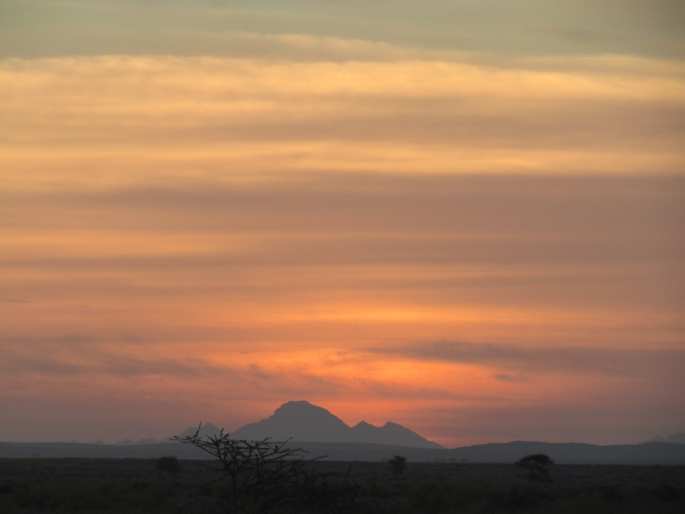

publications
2021
-
Life in Deserts: The Genetic Basis of Mammalian Desert Adaptation Rocha, Joana L., Godinho, Raquel, Brito, José C., and Nielsen, Rasmus Trends in Ecology & Evolution 2021 [Abs]
Deserts are among the harshest environments on Earth. The multiple ages of different deserts and their global distribution provide a unique opportunity to study repeated adaptation at different timescales. Here, we summarize recent genomic research on the genetic mechanisms underlying desert adaptations in mammals. Several studies on different desert mammals show large overlap in functional classes of genes and pathways, consistent with the complexity and variety of phenotypes associated with desert adaptation to water and food scarcity and extreme temperatures. However, studies of desert adaptation are also challenged by a lack of accurate genotype-phenotype-environment maps. We encourage development of systems that facilitate functional analyses, but also acknowledge the need for more studies on a wider variety of desert mammals.
-
Convergent evolution of increased urine‐concentrating ability in desert mammals Rocha, Joana L., Brito, José C., Nielsen, Rasmus, and Godinho, Raquel Mammal Review 2021 [Abs]
1. One of the most celebrated textbook examples of physiological adaptations to desert environments is the unique ability that desert mammals have to produce hyperosmotic urine. Commonly perceived as an adaptation mainly observed in small rodents, the extent to which urine-concentrating ability has evolved independently in distinct mammalian lineages has not previously been assessed using modern phylogenetic approaches. 2. We review urine-concentrating ability data from the literature in 121 mam-malian species with geographic ranges encompassing varying climatic conditions. We explicitly test the general hypothesis that desert-dwelling mammals have evolved greater ability to concentrate urine than non-desert species, controlling for body mass, phylogenetic affinity and other covariates. 3. Ancestral state reconstruction across our dataset’s phylogeny shows that the ability to produce hyperosmotic urine, measured as maximum urine osmolal-ity, has evolved convergently in mammalian species with geographic ranges characterised by low mean annual aridity index. 4. Phylogenetic generalised least-squares (PGLS) models show that the mean annual aridity index of a species’ geographic range largely predicts its urine-concentrating ability, even when accounting for body mass differences, phylogenetic correlations , the specific condition under which urine osmolality was measured, the method used to measure urine osmolality, and the species’ diet. 5. In contrast, we find much weaker correlations between mass-adjusted basal metabolic rate and environmental variables when analysing 84 of the species included in the urine osmolality analysis. 6. Taken together, our results not only show that desert mammals effectively concentrate more urine than non-desert mammals, but further suggest that aridity is likely to have been one of the main selective pressures leading to increasing maximum urine-concentrating ability and driving its repeated evolution in different desert mammalian lineages.
